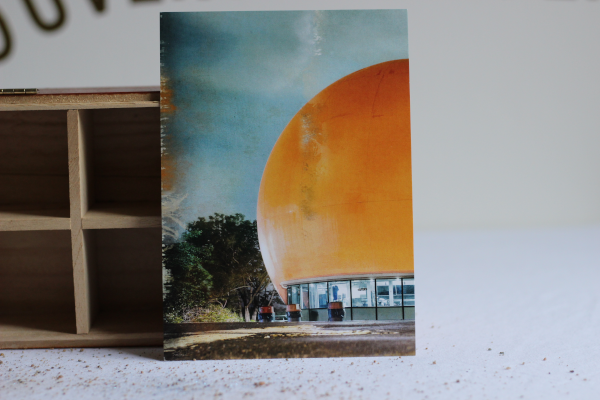

transactions passées
Ici se trouvent les échanges ayant eu lieu dans le passé.
orange julep [échangée, envoyée en date du 8 février 2022]

Souvenir associé: Conduire vers l'autre côté de la ville en été, la radio est allumée. Tu prends deux hots-dogs, une frite et un Julep. Je suis la seule qui se préoccupe du Julep. Je suis la seule qui fait attention.
Numéro d'identification: 00c
contact
Pour plus d'information sur le projet, contactez l'artiste au escarcelle@finartcialist.com.
Pour consulter les autres oeuvres du projet finartcialist, consultez le site internet finartcialist.com.